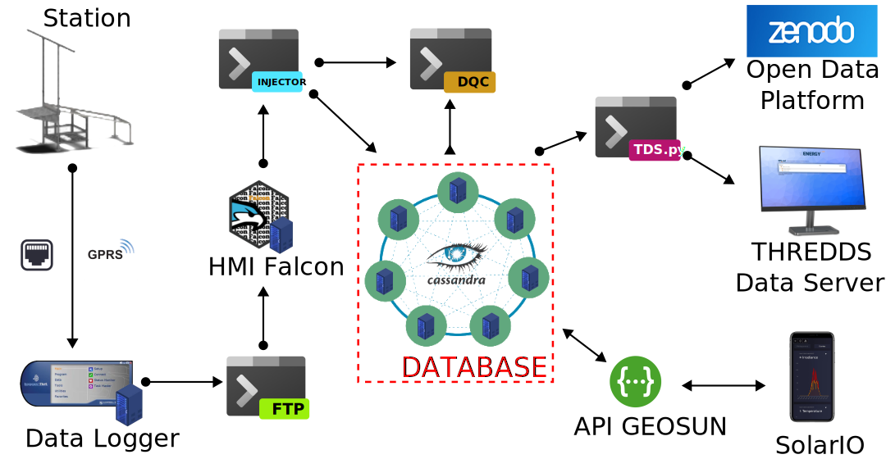
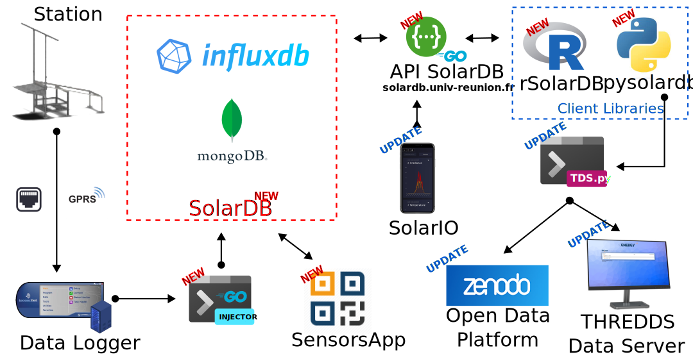
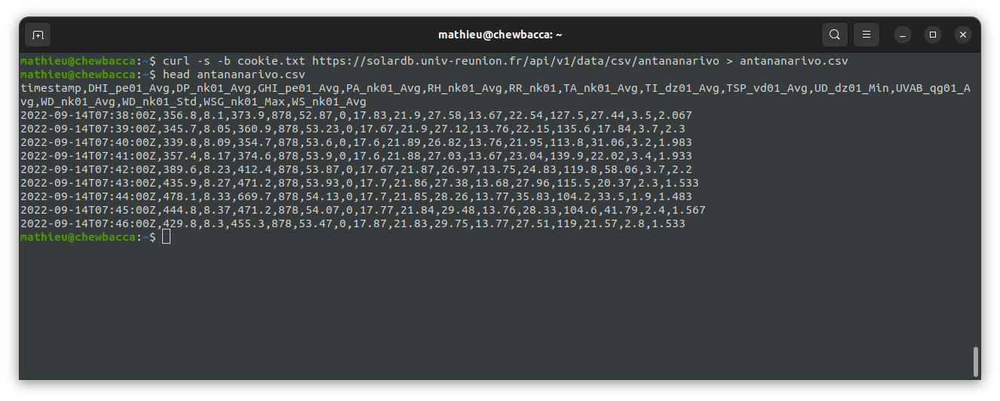
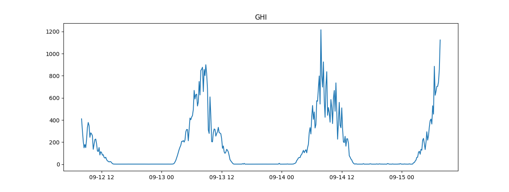
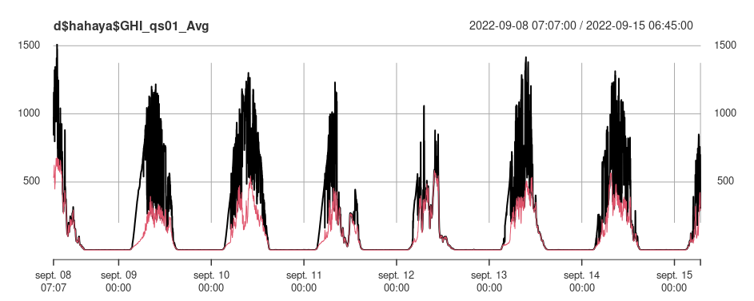

Introduction to the IOS-net open data tools
-- mathieu.delsaut@univ-reunion.fr --
IOS-net closing seminar
19th September 2022
Introduction
Findable
- DOI : the data obtain an unique globally ID and forever persistant.
- OPeNDAP : the metadata is recorded in a searchable way (readable and searchable).
Accessible
- OPeNDAP : the data can be retrieved thanks to their identifier using a standardized communication protocol. OPeNDAP is open, free and universally implementable.
Interoperable
- CF Conventions : the data uses a formal, accessible, shared and widely applicable model for the representation of knowledge (standards on variables, units, and general metadata).
Reusable
- Creative Common : each dataset is published under a clear and acceccible user license.
- CF Conventions : the data is associated with its origin and respects the standards of the community applicable to the field.
Functional Schema
2019 vs 2022
2019
2022
A database migration

A database migration
News features
- Usage of time serie database (DB) : InfluxDB,
- New injertor of data in golang : the traitment chain is quicker,
- New metadata DB using MongoDB : SensorDB,
- New app to help maintainer record metadata : SensorsApp.
Breakings changes
- Need to update all tools using the DB,
- No more quality control store on the DB (but release python library pybsrnqc),
- Name of stations and sensors changent for better clarity.
The database is now called SolarDB
IOS-net project website : Galilée
News features
- English, finally !
- Two new kinds of servicies : API & languages libraries,
- New news and the all episodes of IOS-net documentary.
https://galilee.univ-reunion.fr/
News features
- English, finally !
- Two new kinds of servicies : API & languages libraries,
- New news and the all episodes of IOS-net documentary.
https://galilee.univ-reunion.fr/
New API
SolarDB API
News features
- Full access to data and metadata,
- Everybody can use it but with registration,
- Support of CSV and JSON formats,
- Full documentation,
- Capacity to request aggregations.
Breakings changes
- Address of API change,
- Necessity to rewrite all servicies using old API.
Link
https://solardb.univ-reunion.fr
Example of using API with Curl
curl -c cookie.txt https://solardb.univ-reunion.fr/api/v1/login?token=YOURTOKENHERE
curl -s -b cookie.txt https://solardb.univ-reunion.fr/api/v1/data/json?site=antananarivo | jq ".data"
curl -s -b cookie.txt https://solardb.univ-reunion.fr/api/v1/data/csv/antananarivo > antananarivo.csv
head antananarivo.csv

Client Libraries
Example with python :
# pip install pysolardb
from pysolardb.SolarDB import SolarDB
from datetime import datetime as dt
import matplotlib.pyplot as plt
s = SolarDB(token="PUTYOURTOKENHERE")
data = s.getData(sites=["amitie"], sensor_types=["GHI"], start="-3d", aggrFn="mean", aggrEvery="10m")
plt.figure()
dates = [dt.strptime(date, "%Y-%m-%dT%H:%M:%SZ") for date in data["amitie"]["GHI_qp01_Avg"]["dates"]]
values = data["amitie"]["GHI_qp01_Avg"]["values"]
plt.plot(dates, values)
plt.title(label = "GHI")
plt.show()

Example with R :
devtools::install_github("LE2P/rSolarDB")
library(rSolarDB)
login(token="PUTYOURTOKENHERE")
d <- getXtsData(sites = "hahaya", start = "-7d", type = "GHI,DHI")
plot(d$hahaya$GHI_qs01_Avg, type = "l")
lines(d$hahaya$DHI_qs01_Avg, col = '2', type = "l")

SolarIO
News features
- Default data retrieval is hourly aggregation,
- Possibility to switch between 1h, 10mins and 1min,
- Aggregation : mean, max, min.
Links
THREDDS Data Server
FAIR data server using netcdf and csv
News features
- Presence of all stations managed by EnergyLab,
- Enhance the CF-Conventions version 1.08
Breakings changes
- Monthly files,
- Sensors and stations namming conventions changed.